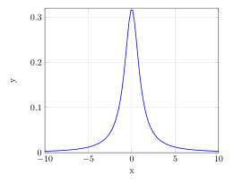

Week 4
Recap: Well-Defined vs. Undefined Expectations
The positive part of \(X\) is well-defined if either \(E X^+ < \infty\) or \(E X^- < \infty\).
A random variable \(X\) has the Zeta(\(s\)) distribution for \(s > 1\), if it has pmf
\[f_X(k) = P(X = k) = \frac{1}{\zeta(s)k^s} \mathbb 1 (k \in \mathbb \{ 1, 2, ... \})\]
where \(\mathbb \zeta (s)\) is the Riemann zeta function. The use of the Riemann zeta function may seem scary, but it’s really just acting as the normalizing constant here so that this is a proper pmf.
Since \(EX^- = E(-\min(X,0)) = 0\), \(EX\) is well-defined.
Recall that \(\zeta(s) = \sum_{i=1}^\infty \frac{1}{k^s}\).
However, if \(s \leq 2\) then the mean is infinite:
\[EX = \sum_{i=1}^\infty k f_X(k) = \sum_{i=1}^\infty \frac{1}{\zeta (s) k^{s-1}} = \infty.\]
Now suppose that \(Y\) is a discrete random variable with pmf
\[f_Y(k) = P(Y=k) = \frac{1}{2ck^2} \mathbb 1 (|k| \in \{ 1, 2, ... \})\]
where \(c = \zeta(2)\).
Then \(EY^+ = \infty\) and \(EY^- = \infty\). For example,
\[EY^+ = \sum_{k=0}^\infty kP(Y^+ = k) = \sum_{k=1}^\infty \frac{1}{2ck} = \infty.\]
So the mean of \(Y\) is not well-defined (or, undefined).
Cauchy Distribution Example
A random variable \(X\) has the Cauchy(0,1) distribution if it has the pmf
\[f_X(x) = \frac{1}{p} \frac{1}{1+x^2}\]
for \(x \in \mathbb R\). If \(X \sim \text{Cauchy}(0,1)\) then \(EX\) is undefined.
The Cauchy distribution has heavy tails, meaning it can take very large values with non-negligible probability.
Moments
Let \(k\) be a positive integer. The \(k\)th moment of \(X\) is \(E(X^k)\). The \(k\)th central moment of \(X\) is \(E((X-EX)^k)\).
The variance of a random variable is the 2nd central moment:
\[\text{Var}(X) \stackrel{def}{=} E((X-EX)^2).\]
\(\text{Var}(X)\) is sometimes denoted \(\sigma^2(X)\) or simply \(\sigma^2\).
The standard deviation of \(X\) is \(\sqrt{\text{Var}(X)}\).
Both the variance \(\sigma^2\) and the standard deviation \(\sigma\) quantify how spread out a distribution is. However, \(\sigma\) is more interpretable since it is in the same units as \(X\).
If the mean is undefined for a distribution, the variance and standard deviaion will also be undefined, as in the Cauchy distribution. How might we quantify the spread of the distribution? One might use quantiles. Median absolute deviation. A really simple approach might be the difference between the 95th and 5th percentiles.
Properties of Variance
- If \(\text{Var}(X) < \infty\), then for any \(a,b \in \mathbb R\),
\[\text{Var}(aX + b) = a^2 \text{Var}(X).\]
A useful formula for the variance is \(\text{Var}(X) = EX^2 - (EX)^2\).
Suppose \(Y\) is an estimator of some quantity \(y_0\). Then the mean squared error is \[mse = E(|Y - y_0|^2) = (EY - y_0)^2 + E((Y-EY)^2).\]
\[ = \text{bias}^2 + \text{variance}\]
Proof of 2. \[\text{Var}(X) = E((X - E X)^2)\] \[ = E(X X - X E X - E X X + (E X)^2)\] \[ = E X^2 - 2E XE X + (E X)^2\] \[ = E (X^2) - (E X)^2\]
Proof of 1 using 2. Now apply the 2nd to the first question:
\[\text{Var}(aX+b) = E((aX+b - E(aX+b))^2)\]
or \[\text{Var}(aX+b) = E((aX+b)^2) - E(aX+b)^2 \] \[ = E(a^2X^2+2abE X + b^2) - (aE X+b)^2 \]
\[ = (a^2E(X^2)+\cancel{2abE X} + \cancel{b^2}) - (a^2(E X)^2+\cancel{2abE X}+\cancel{b^2})\] \[ = a^2((E X^2)^2 - E(X)^2) \] \[ = a^2\text{Var}(X)\]
Proof of 1 using definitions. Using the 2nd central moment formula:
\[\text{Var}(aX+b) = E((aX+b - E(aX+b))^2)\] \[ = E((aX+b - (aE X+b))^2)\] \[ = E((aX - (aE X)^2)\] \[ = a^2E((X - (E X)^2)\] \[ = a^2\text{Var}(X)\]
Proof of 3. Mean squared error is defined as \[mse = E((Y - y_0)^2)\]
A nice trick is to add and subtract by the same thing.
\[ \text{mse} = E((Y - EY + EY - y_0)^2)\] \[ = E((Y-EY)^2 + 2(Y-EY)(EY-y_0) + (EY - y_0)^2)\] \[ = E((Y-EY)^2) + 2\underbrace{(EY-EY)}_{=0}(EY-y_0) + (EY - y_0)^2\] \[ = \underbrace{E((Y-EY)^2)}_{\text{variance}} + \underbrace{(EY - y_0)^2}_{\text{bias}^2}\]
A good illustration of the bias-variance tradeoff is in estimating the sample variance of normally distributed values.
Suppose that \(X_1, X_2, ... \sim \mathcal N(\mu, \sigma^2)\).
\[\bar x = \frac{1}{n} \sum_{i=1}^n X_i\]
\[\hat \sigma^2 = \frac{1}{n-1} \sum_{i=1}^n (X_i-\bar X)^2\]
The above is unbiased, but it’s not the estimator with lowest mse. One can get a better estimator with lower mean-squared-error by using either \(1/n\) or \(1/(n+1)\). For more details on the \(1/(n+1)\) correction, look at page 351 in Casella and Berger.
The usual \(1/(n-1)\) correction is known as Bessel’s correction.
Even further, suppose that \(X_1, X_2, ... \sim \mathcal N(\mu_i, \sigma^2)\).
Naively, one would think that the best estimates for \(\hat \mu_i\) is just \(X_i\), but the James-Stein estimator/paradox shows that by decreasing the variance we can come up with estimators that have lower mean-squared-error.
A common misperception is that bias is always bad. In fact, allowing some bias usually improves performance by reducing variance. This is especially important when building a prediction model. Less flexible models tend to have greater bias, since they cannot fit the distributions as closely. More flexible models tend to have greater variance, since they have more parameters to estimate. Since \(\text{mse} = \text{bias}^2 + variance\), there is a trade-off, and mse is minimized by setting the flexibility equal to some critical point.
Moment Generating Functions
The moment generating function (mgf) of a random variable \(X\) is
\[M_X(t) = E[e^{tX}]\] for \(t \in \mathbb{R}\).
The mgf is said to exist if \(M_X(t)\) is finite in a neighborhood of zero. In other words, if there is some \(h > 0\) such that \(M_X(t) < \infty\) whenever \(|t| < h\).
This terminology is a little weird since the function always exists but might be infinite.
Why is it called the “moment generating function”?
For all \(k \in \{ 1, 2, 3, ... \}\),
\[EX^k = \frac{d^k}{dt^k} M_X(t) \lvert_{t=0.}\]
That is, the \(k\)th moment of \(X\) equals the \(k\)th derivative of \(M_X(t)\) evaluated at \(t=0\).
So \(M_X(t)\) is a function from which one can “generate” the moments simply by differentiating and evaluating at \(t=0\).
Exponential Example
If \(X \sim \text{Exponential}(\lambda)\), then for \(|t| < \lambda\),
\[M_X(t) = E[e^{tx}] = \int_0^\infty \exp(tx) \lambda \exp(-\lambda x) dx\] \[ = \lambda \int_0^\infty \exp(-(\lambda - t)x) dx\]
\[= \frac{\lambda}{\lambda - 1} \int_0^\infty (\lambda - t)\exp(-(\lambda - t)x)dx\]
In the last step, we multiplied and divided by \(\lambda - t\) so that the inside is an exponential pdf with parameter \(\lambda - t)\) (and thus has integral 1).
\[ = \frac{\lambda}{\lambda - 1} < \infty\]
for \(|t| < \lambda.\)
We can easily compute the moments of \(X\) using the mgf.
Without using the mgf, we’d have to use integration by parts to solve:
\[EX^k = \int_0^\infty x^k \lambda e^{-\lambda x} dx,\] which could be a bit painful for larger \(k\).
So instead, using the mgf, we get that the 1st and 2nd moments are:
\[E X = \frac{d}{dt} \frac{\lambda}{\lambda - t} \big\lvert_{t=0} = \frac{\lambda}{(\lambda - t)^2} \big\lvert_{t=0} = \frac{1}{\lambda}\]
\[EX^2 = \frac{d^2}{dt^2} \frac{\lambda}{\lambda-t} \big\lvert_{t=0} = \frac{d}{dt} \frac{\lambda}{(\lambda - t)^2} \big\lvert_{t=0} = \frac{2\lambda(\lambda- t)}{(\lambda-t)^4} \big\lvert_{t=0} = \frac{2}{\lambda^2}. \]
Thus the variance of \(X\) is
\[\text{Var}(X) = EX^2 - (EX)^2 = \frac{2}{\lambda^2} - \frac{1}{\lambda^2} = \frac{1}{\lambda^2}.\]
Could it be that the moments still exist even if the mgf does not take on a finite value?
Recall that \[e^{tX} = \sum_{k=0}^\infty \frac{(tX)^k}{k!} \geq \frac{t^kX^k}{k!} \quad (X \geq 0)\]
So it might be that the moment generating function doesn’t exist while the moments themselves do exist.
We’ll get to the characteristic function soon:
\[\phi_X(t) = E(e^{itX}).\]
And \(|e^{itX}| = 1\).
Uniqueness of Moments
\(X\) has bounded support if \(P(|X| < c) = 1\) for some \(c \in \mathbb{R}\).
Suppose \(X\) and \(Y\) have bounded support. Then \(X \stackrel{d}{=} Y\) if and only if \(EX^k = EY^k\) for all \(k \in \{ 1, 2, ... \}\).
If \(M_X(t)\) and \(M_Y(t)\) exist and are equal on a neighborhood of zero, then \(X \stackrel{d}{=} Y\).
This does not hold in general for unbounded distributions. There’s such an example in Casella and Berger.
Differentiating under the integral sign
Often we want to interchange the order of differentiation and integration.
For example, for mgfs:
\[\frac{d^k}{dt^k} M_X(t) \lvert_{t=0} = \frac{d^k}{dt^k} E\big(\exp(tX)\big) \lvert_{t=0}\] \[ = E\big(\frac{d^k}{dt^k} \exp(tX)\lvert_{t=0}\big)\] \[ = E\big( X^k \exp(tX) \lvert_{t=0}\big)\] \[ = E(X^k).\]
This is using the fact that \(\frac{d}{dt} e^{tx} = x e^{tx}\), and hence \(\frac{d^k}{dt^x} e^{tx} = x^k e^{tx}\).
The step where we swap the order of \(\frac{d^k}{dt^k}\) and \(E\) is called differentiating under the integral sign.
However, regularity conditions are needed for this to hold.
Suppose that \(f(x,t)\) is differentiable with respect to \(t\) for each \(x\), and there exists a function \(g(x,t)\) such that
for all \(x\) and all \(t'\) in a neighborhood of \(t\) \[\left\lvert \frac{\partial }{\partial t} f(x,t) \lvert_{t=t'} \right\rvert \leq g(x,t)\]
\(\int_{-\infty}^\infty g(x,t) dx < \infty\). Then \[\frac{d}{dt} \int_{-\infty}^\infty f(x,t) dx = \int_{-\infty}^\infty \frac{\partial}{\partial t} f(x,t) dx.\]
See Casella & Berger (Theorem 2.4.3) for a slightly more general version. This proof uses one of the most important results in measure theory: the dominated convergence theorem.
We present a non-measure theoretic version of the dominated convergence theorem here, which is not fully general but gets the main idea across.
Suppose that \(f(x,t)\) is continuous at \(t_0\) for each \(x\) and there exists \(g(x)\) such that
- \(|f(x,t)| \leq g(x)\) for all \(x\) and all \(t\), and
- \(\int_{-\infty}^\infty g(x) dx < \infty\).
Then \[\lim_{t\to t_0} \int_{-\infty}^\infty f(x,t) dx = \int_{-\infty}^{\infty} \lim_{t\to t_0} f(x,t) dx.\]
The dominated convergence theorem allows us to justify switching the order of limits and integrals.